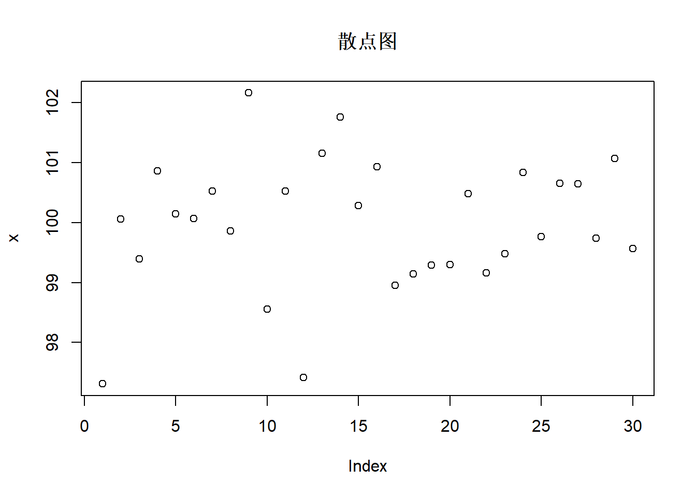
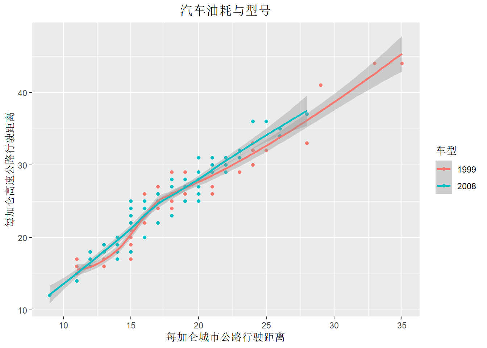

1 第1次作业解答
1.1 Question
Produce 3 examples(texts,figures,tables)
1.2 Answer
1.2.1 Texts
a=c("今天","吃饭")
b=c("你","了吗?")
d=paste0(a,b,collapse="") ## 拼接字符串a,b
d## [1] "今天你吃饭了吗?"1.2.2 Figures
## 从均值为100，方差为1的正态分布中，随机生成30个数
x <- rnorm(30, mean=100, sd=1)
print(round(x,2))## [1] 97.31 100.06 99.39 100.87 100.15 100.07 100.52 99.86 102.16 98.56
## [11] 100.52 97.42 101.16 101.76 100.29 100.94 98.96 99.15 99.29 99.30
## [21] 100.49 99.16 99.48 100.84 99.76 100.66 100.65 99.74 101.07 99.57## 30个随机数的散点图
plot(x,main="散点图")
## 30个随机数的直方图
hist(x, col=rainbow(15),
main='正态随机数', xlab='', ylab='频数')
1.2.3 ggplot2
ggplot2包的mpg数据集:(从1999年到2008年38款流行车型的燃油经济性数据) ，234*11的数据规模，记录了制造厂商，型号，类别，驱动程序和耗油量
- cty 和hwy分别记录城市和高速公路驾驶耗油量
- cyl:气缸数
- displ:发动机排量
- drv:驱动系统：前轮驱动(f)、后轮驱动和四轮驱动(4)
- class:车辆类型,如双座汽车,suv,小型汽车
- fl:燃料类型
## 用ggplot2画图
library(ggplot2)
data(mpg) ## 导入mpg数据集
ggplot(data=mpg,mapping = aes(x=cty,y=hwy,color=factor(year)))+
geom_point()+stat_smooth(method = 'loess')+
scale_shape_manual(values = c(2,5))+
labs(y = '每加仑高速公路行驶距离', x = '每加仑城市公路行驶距离',
title = '汽车油耗与型号', size = '排量', colour = '车型')+
theme(plot.title = element_text(hjust = 0.5))## `geom_smooth()` using formula 'y ~ x'
1.2.4 Tables
library(xtable)
## 显示表格
knitr::kable(head(mpg))| manufacturer | model | displ | year | cyl | trans | drv | cty | hwy | fl | class |
|---|---|---|---|---|---|---|---|---|---|---|
| audi | a4 | 1.8 | 1999 | 4 | auto(l5) | f | 18 | 29 | p | compact |
| audi | a4 | 1.8 | 1999 | 4 | manual(m5) | f | 21 | 29 | p | compact |
| audi | a4 | 2.0 | 2008 | 4 | manual(m6) | f | 20 | 31 | p | compact |
| audi | a4 | 2.0 | 2008 | 4 | auto(av) | f | 21 | 30 | p | compact |
| audi | a4 | 2.8 | 1999 | 6 | auto(l5) | f | 16 | 26 | p | compact |
| audi | a4 | 2.8 | 1999 | 6 | manual(m5) | f | 18 | 26 | p | compact |